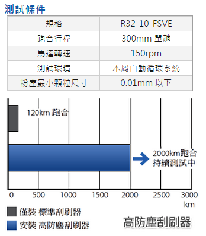

客服專線：(03)280-6015
滾珠螺桿特性介紹
高信賴性
PMI 之滾珠螺桿是十多年來所累積製造技術為基礎，從材料、熱處理、設計、生管、品管到出貨，都有一定的處理作業，其制度化的管理讓我們的滾珠螺桿給顧客高度的信賴性。
高精度的保證
PMI 之滾珠螺桿其螺桿與螺帽都在恆溫室內做精密加工、研磨、裝配及品管，可保證高精度的品質，請查閱精度檢驗證明。
優異的耐久性
PMI 以累積十多年的滾珠螺桿的生產技術，採用德製鋼材施以本公司特有的先進處理及研磨技術，可供給耐久性優異的滾珠螺帽與滾珠螺桿。
高效率
滾珠螺桿其運轉是靠螺帽內的鋼珠作滾動運動，比傳統滑動螺桿有更高的效率，所需的扭矩只有傳統滑動螺桿的 1/3 以下。所以可輕易地將回轉運動轉變為直線運動。
無背隙與高剛性
PMI 之滾珠螺桿採用哥德式 (Gothic arch) 溝槽形狀、使鋼珠與溝槽能有最佳接觸以便輕易運轉。若加入適當的預壓力，消除軸方向間隙，可使滾珠螺桿有更佳的剛性，減少滾珠和螺帽、螺桿間的彈性變形，達到更高的精度。

-
設計理念
針對滾珠螺桿刮刷機構進行特殊設計開發，以多層接觸式防塵單元發揮產品優越的除屑刮刷能力。 -
高搭配性
高防塵刮刷器目前可搭配 E-type、D-type 等各內、外循環螺帽型式。 -
防塵效果提昇
刮刷器本身彈簧承靠面縮小，增加單點牙型貼合效果，加強刮刷能力。 -
刮刷續航力佳
刮刷器外圈利用彈簧迫緊，當刮刷器產生磨耗會自動調整刮刷器預緊力。 -
高耐用性
利用貼合螺桿牙型刮刷器與接近軸斷面形狀的密封墊，使木屑等級之粉塵無法進入螺帽內部。 -
高密封墊圈
螺桿的特殊溝槽設計，使刮刷器內部的高防塵密封墊圈能完全貼合螺紋表面，因此可同時達到除屑以及防塵的雙重功效。 -
刮刷器設計
刮刷器貼合牙型的延伸設計，使刮刷效果大幅提昇，而在螺帽總長有別於一般規格，有關螺帽總長的問題，請聯絡我們。 -
螺桿軸端設計
螺桿任一側軸端建議小於螺桿根徑dr，若有螺桿肩部尺寸問題，請聯絡我們。 -
高防塵滾珠螺桿應用
木工加工機械、雷射加工機、高精度輸送設備、機械手臂或一般工具機等需防塵的加工環境。